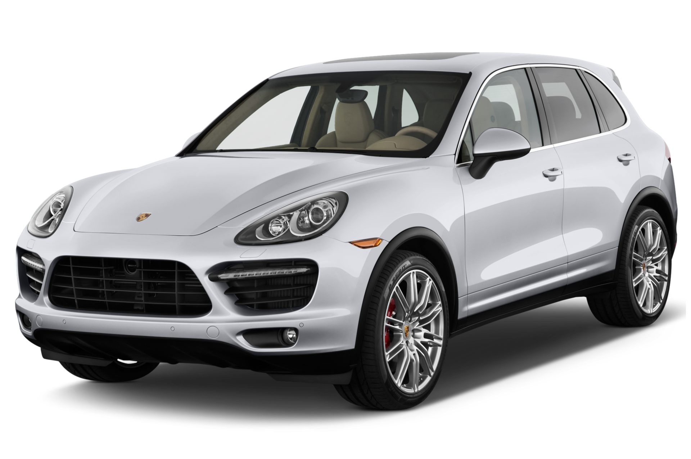

|
The Porsche Cayenne is one of the most appealing midsize luxury crossovers thanks to its sophisticated engineering, impeccable construction, immense features list and surprisingly useful cabin. True, it doesn't boast a third-row seat or the massive cargo capacity of larger crossovers, but its sliding, reclining and folding rear seat adds a degree of versatility that other luxury SUVs lack. With the new 2013 Cayenne Diesel model and the carry-over Cayenne S Hybrid, good fuel economy also becomes a strong selling point.
|
 |
The base 2013 Porsche Cayenne comes with a 3.6-liter V6 that produces 300 hp and 295 pound-feet of torque. As on every Cayenne, all-wheel drive is standard. A six-speed manual transmission is standard; an eight-speed automatic is optional and includes an automatic stop/start system for reduced fuel consumption. Porsche estimates this engine will bring the Cayenne from zero to 60 mph in 7.4 seconds with the automatic (7.1 for the manual), which would be a little slower than average for a six-cylinder luxury SUV. EPA-estimated fuel economy with the automatic is 17 mpg city/23 mpg highway and 19 mpg combined. It drops to 15/22/17 with the manual.
This Cayenne S represents a substantial upgrade, with its 4.8-liter V8 good for 400 hp and 369 lb-ft of torque. As with every V8 Cayenne, the eight-speed automatic with auto stop/start is standard. Porsche estimates the S will hit 60 mph in 5.4 seconds. EPA-estimated fuel economy is nearly equal to the V6 at 16/22/18.